docker制作容器 2021/07/16 12:07:30
2.1 安装ssh 2.2 安装必备工具：jdk,node,jmeter，nginx，gunicorn
参考连接https://www.runoob.com/docker/docker-install-ubuntu.html
1.拉取最新版的 Ubuntu 镜像
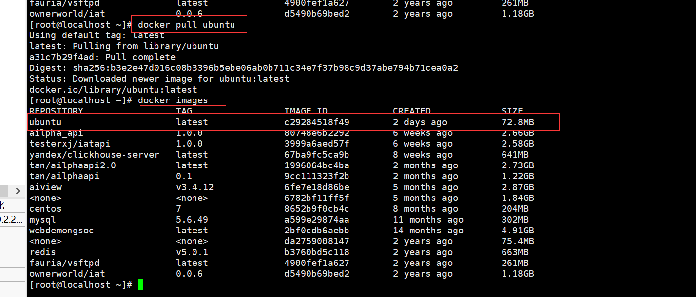
2.创建并启动容器
docker run -it –name product_api_product -p 10025:22 -p 10084:80 -p 10055:5000 ubuntu:latest
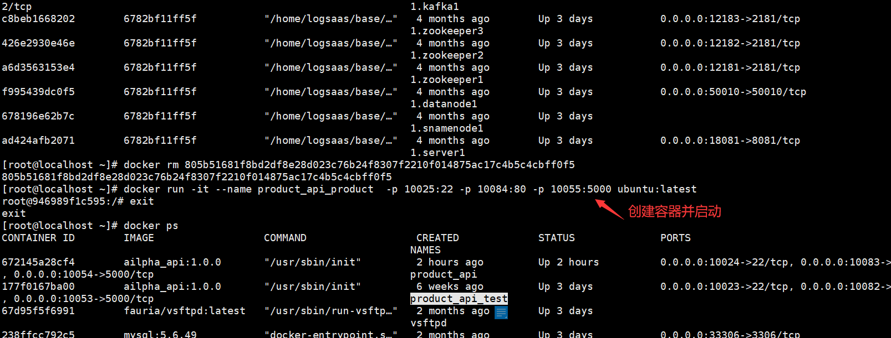
3.进入刚才创建的容器
docker exec -it product_api_sj bash
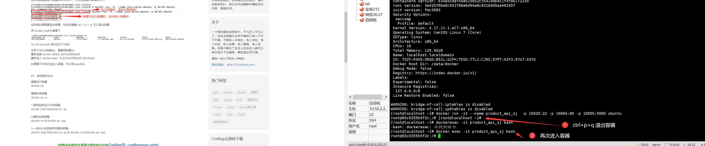
4.安装各种工具包
4.1 安装ssh，参考文档https://www.cnblogs.com/mengw/p/11413461.html;
①执行更新： apt-get update
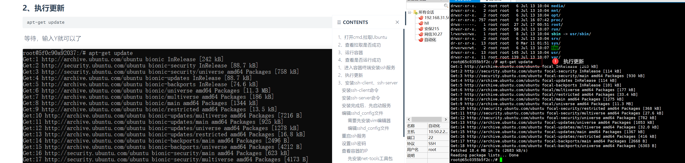
② 安装ssh-client命令：apt-get install openssh-client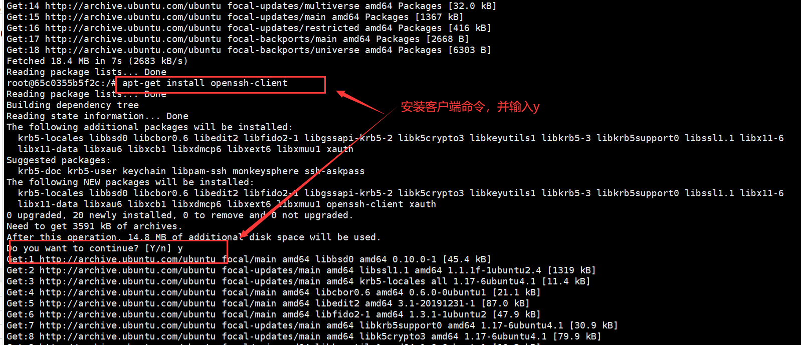
③安装ssh-server命令，注意要选择地区：apt-get install openssh-server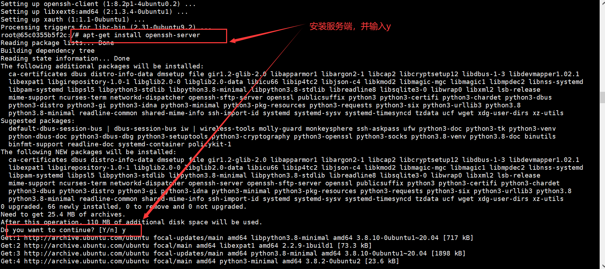
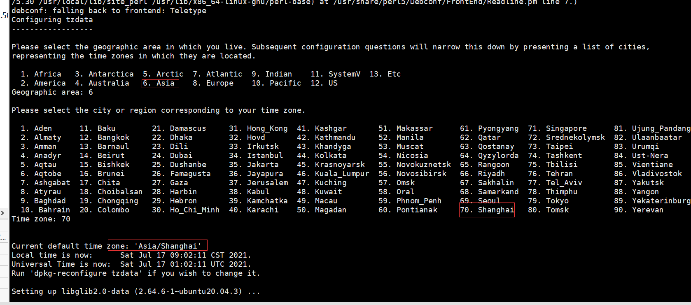
④启动服务，和检查是否正常启动：/etc/init.d/ssh start和ps -e|grep ssh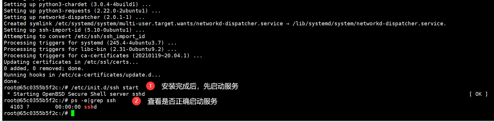
⑤编辑sshd_config文件。 1.先安装vim，命令：apt-get install vim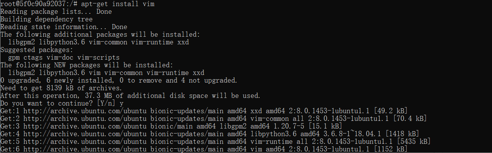
2.编辑sshd_config文件，命令：vim /etc/ssh/sshd_config，编辑好后保存退出 ESC + : + WQ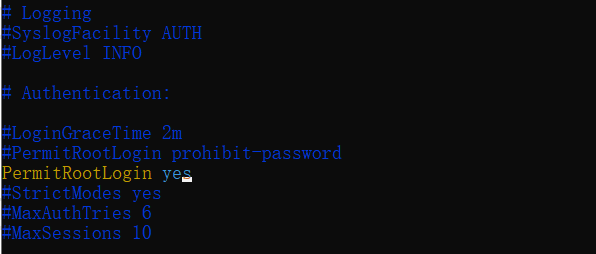
3.重启ssh服务和设置密码，命令：service ssh restart 和passwd root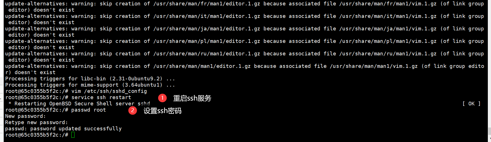
⑥查看容器的IP 1.安装net-tools工具包，命令：apt-get install net-tools 2.查看IP，命令：ifconfig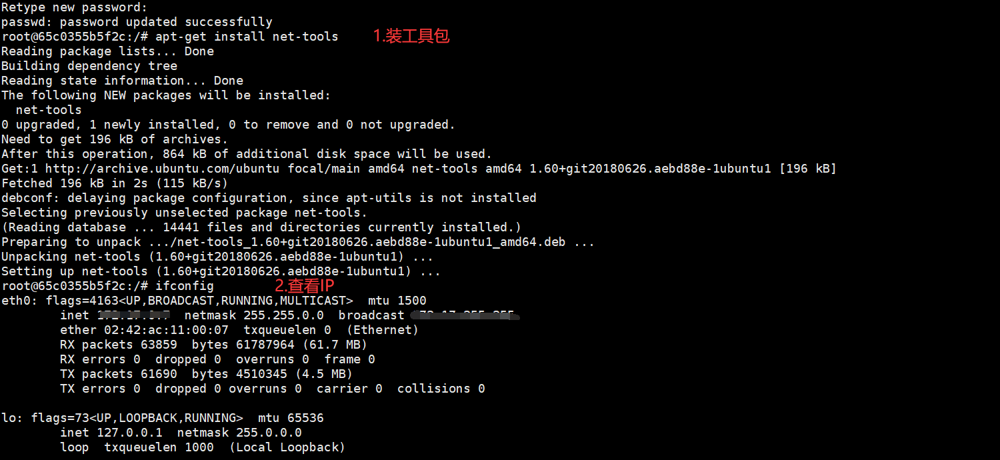
4.2.检查是否有python，有就不用安装python：
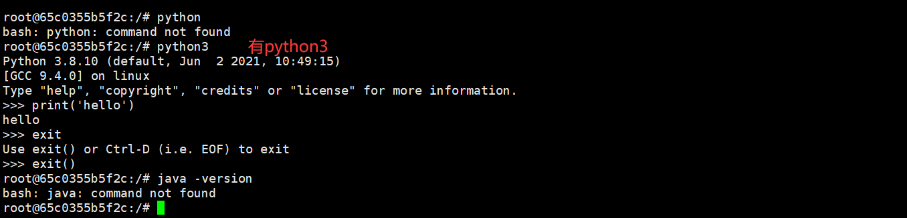
4.3.已知下载好linux下的jdk,node,jmeter.手动解压安装Jdk，node,jmeter等：
①安装jdk，参考https://blog.csdn.net/weixin_38924500/article/details/106215048 1.创建文件夹，并解压，命令：sudo tar -axvf /tools/jdk-8u11-linux-x64.tar.gz -C /usr/local/jvm/
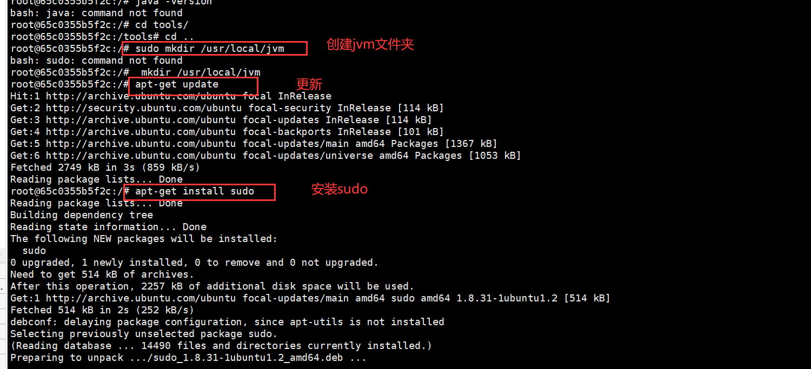
2.修改环境变量，命令：sudo vi ~/.bashrc 使环境变量马上生效，命令：source ~/.bashrc 系统注册此jdk,命令：sudo update-alternatives –install /usr/bin/java java /usr/local/jvm/jdk1.8.0_11/bin/java 300 查看jdk版本，命令：java -version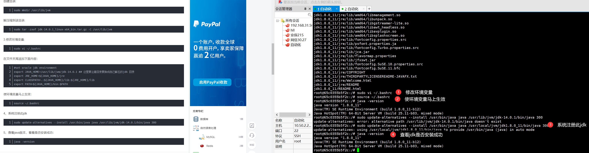
②安装jmeter.同安装jdk一样，先创建文件夹，再解压，改环境变量。 执行解压文件命令：sudo tar -zxvf /tools/apache-jmeter-5.4.1.tgz -C /usr/local/jmeter/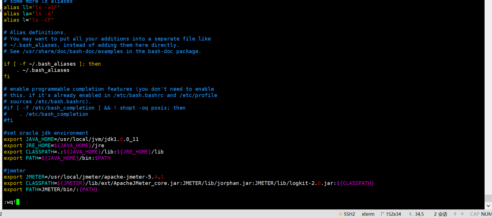
查看版本号:jmeter –version③安装node,先解压，再加环境变量。 解压命令：sudo tar -xvf /tools/node-v14.17.0-linux-x64.tar.xz -C /usr/local/nodejs/ 查看版本号：node -v
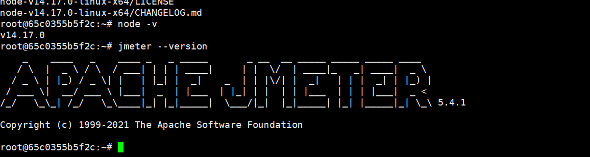
④安装nginx. 参考：https://blog.csdn.net/qq_23832313/article/details/83578836 1.安装依赖包（我也不知道这些依赖包有什么用） apt-get install gcc apt-get install libpcre3 libpcre3-dev apt-get install zlib1g zlib1g-dev sudo apt-get install openssl sudo apt-get install libssl-dev
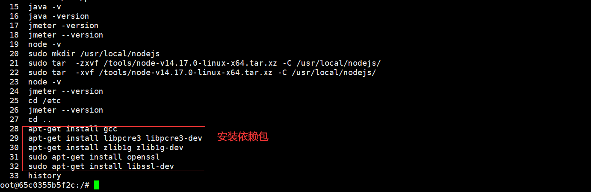
2.下载好的nginx压缩包放到服务器上，解压。其中，make命令没有，我重新安装的。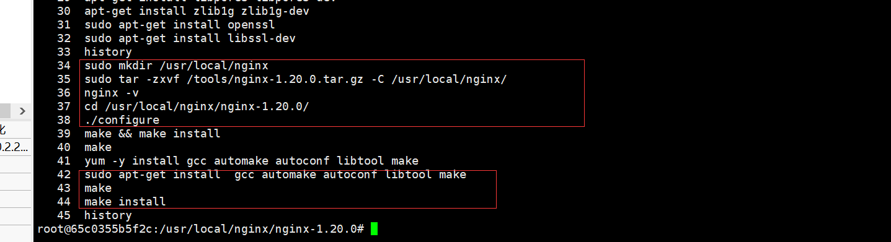
3.启动和检查nginx是否安装成功。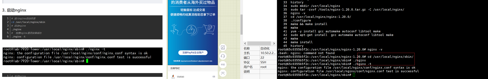
4.更改nginx配置，使其监听80or443端口后，访问指定的前端路径和后端接口；这里就看个人部署在服务器上的路径（nginx.conf可以找我要）。 5.再次启动运行nginx。此时发现报错，nginx: [emerg] open() “/var/log/nginx/access.log” failed (2: No such file or directory) 新建缺少的对应文件夹和文件即可。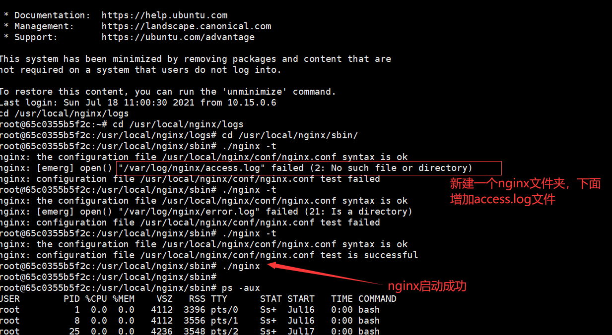
4.4.安装gunicorn：
①检查没有pip,先安装pip,命令：sudo apt-get install python3-pip
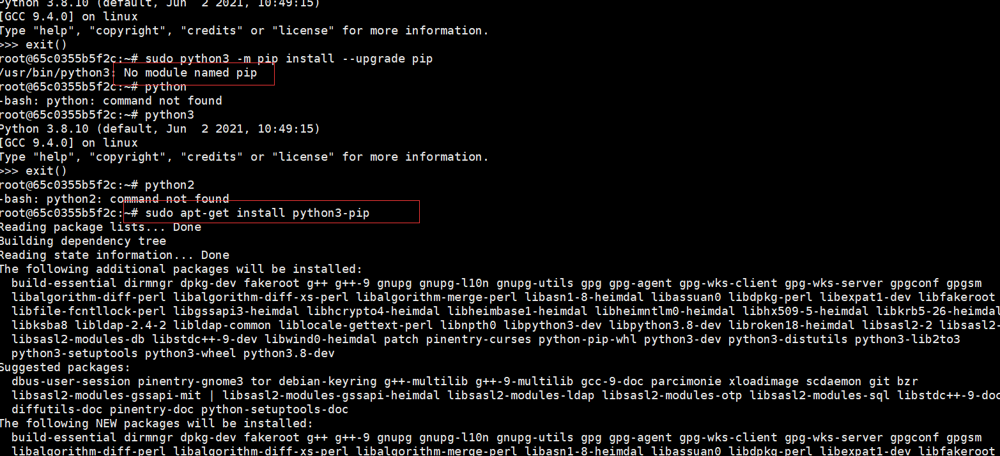
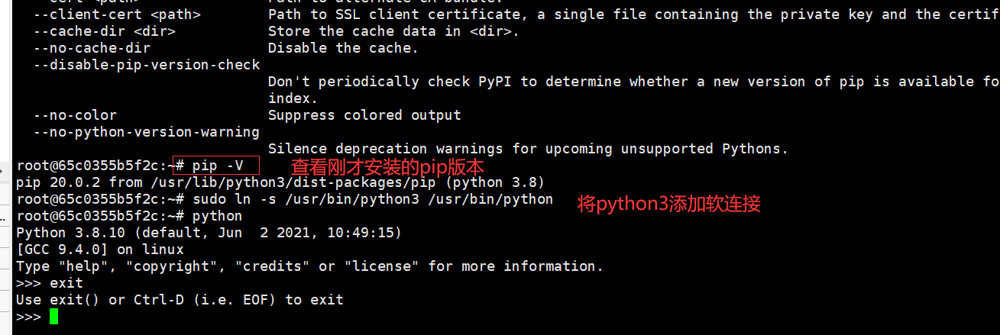
②安装gunicorn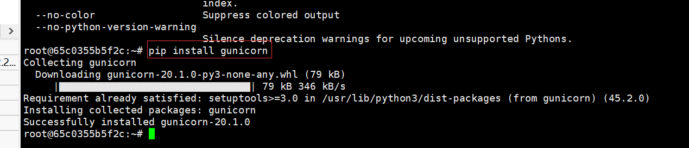
③安装虚拟环境，命令： sudo apt-get install python-setuptools sudo pip install virtualenv ④进入flask应用部署目录，创建虚拟环境并激活。 cd /home/ailpha_api/server virtualenv venv . venv/bin/activate ⑤各种需要安装的组件：requirements.txt 进入requirements.txt所在目录，执行命令： pip install -r requirements.txt 其中安装报错ERROR: No matching distribution found for mysqlclient==2.0.3 ，执行了以下依赖包后，重新安装组件。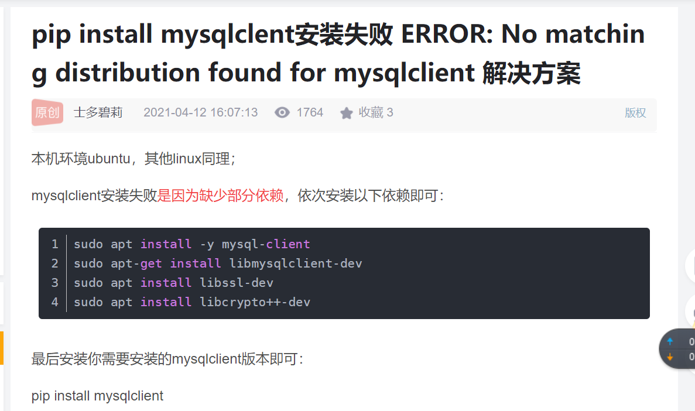
5.启动程序，运行，访问
①调试运行，看环境是否搭建好。进入后端的部署路径入口处，如：cd /home/ailpha_api/server，直接运行python run.py 启动整个应用工程。注意运行时报错etrieving data from RDS gives AttributeError: ‘sqlalchemy.cimmutabledict.immutabledict’ object has no attribute ‘setdefault’ 解决方案：pip install –upgrade ‘SQLAlchemy<1.4’，安装小于1.4版本的即可。 ②后端正常访问后，直接打开前端页面，看是否正常访问：http://宿主机ip+宿主机端口。 如果不能访问，说明nginx配置有问题，需再检查下； ③前后端都正常后，前端是否正常登录，访问后端接口。 ④后端改变运行方式，后台挂起运行。使用命令：#①进入程序入口： cd /home/ailpha_api/server #②后台挂起： nohup gunicorn -w4 –worker-class=gevent -b0.0.0.0:5000 run:app –reload >gunicorn.log 2>& 1 &
6.以上过程的其他操作补充
6.1容器内部获取信息,命令： docker inspect 容器id或者容器名称
6.2进入容器后，创建flask工程项目的虚拟目录。 apt-get update
apt-get install sudo
sudo apt-get install python3-pip sudo apt-get install python-setuptools sudo pip install virtualenv virtualenv venv . venv/bin/activate